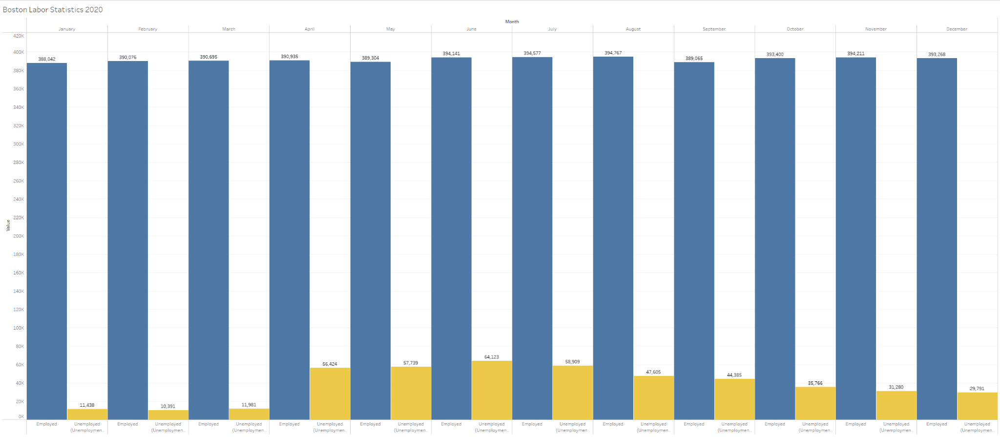
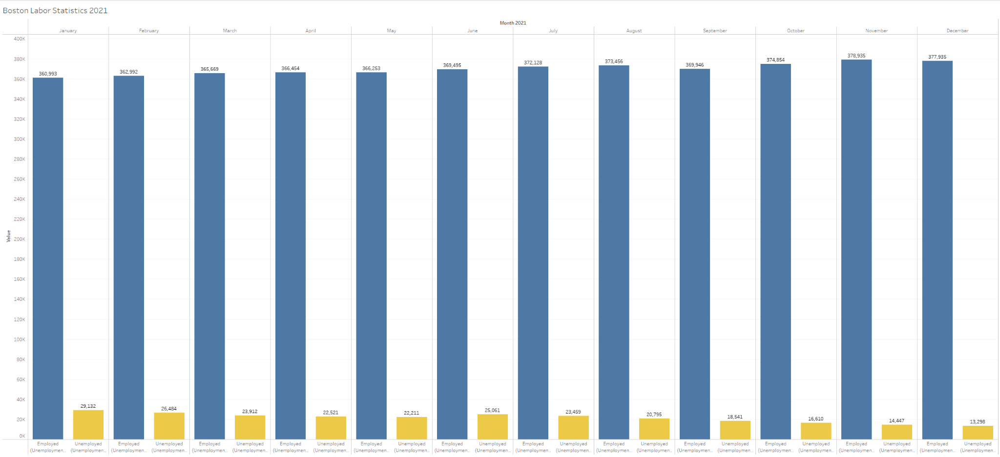
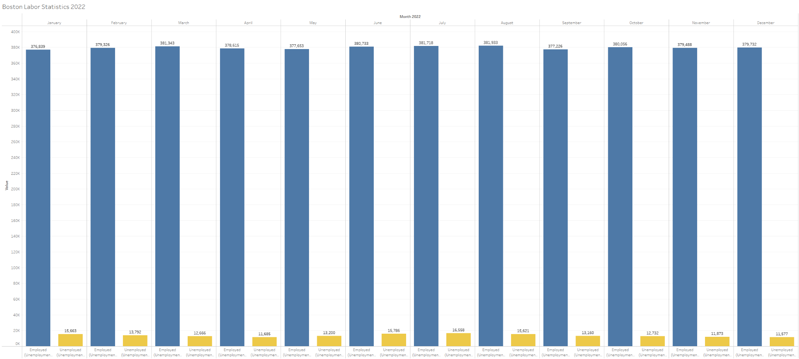
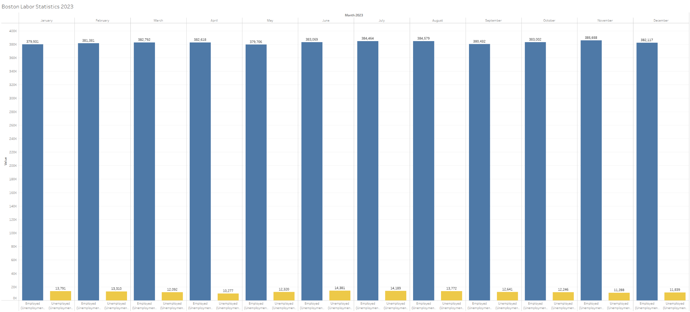
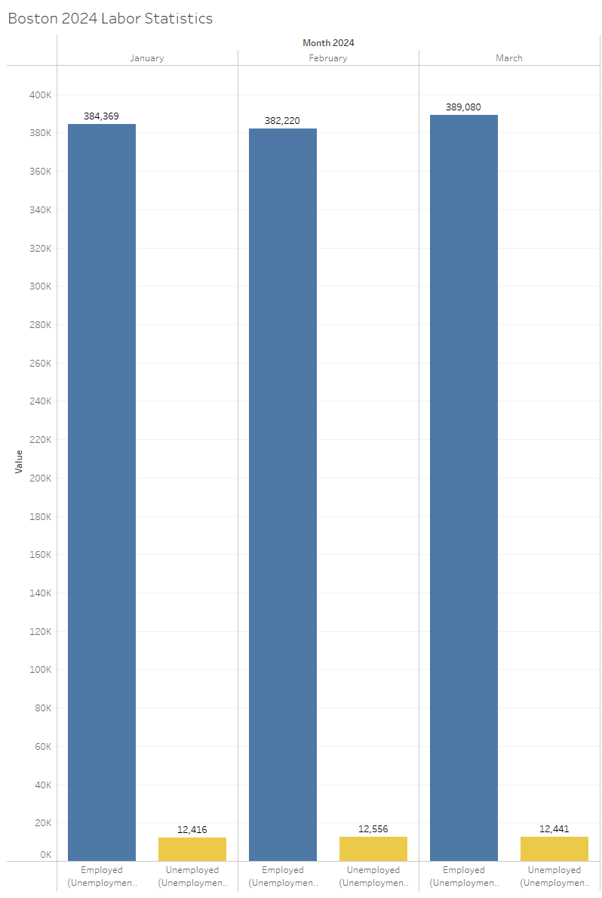
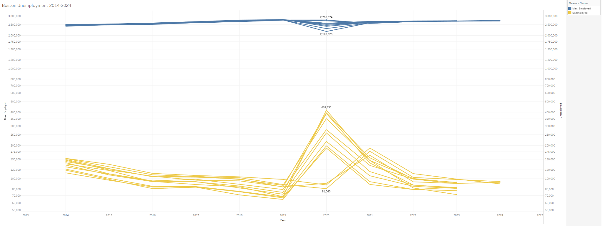
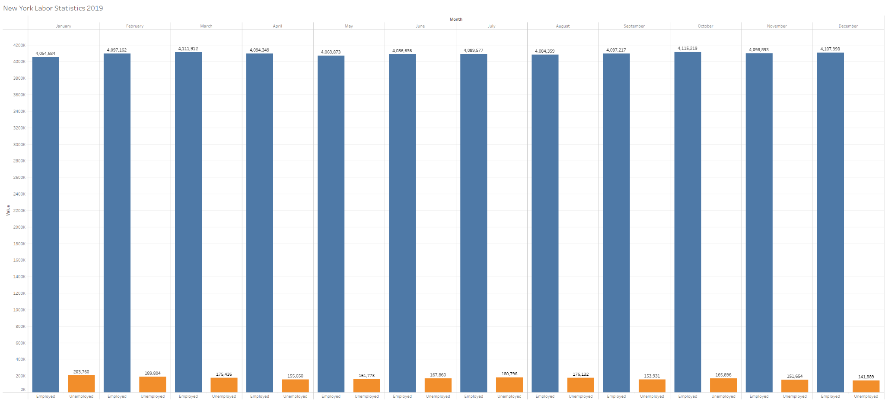
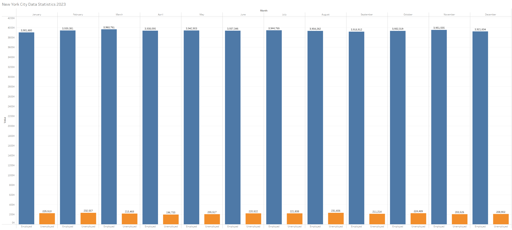
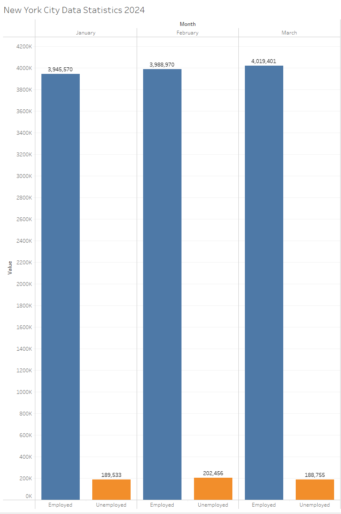
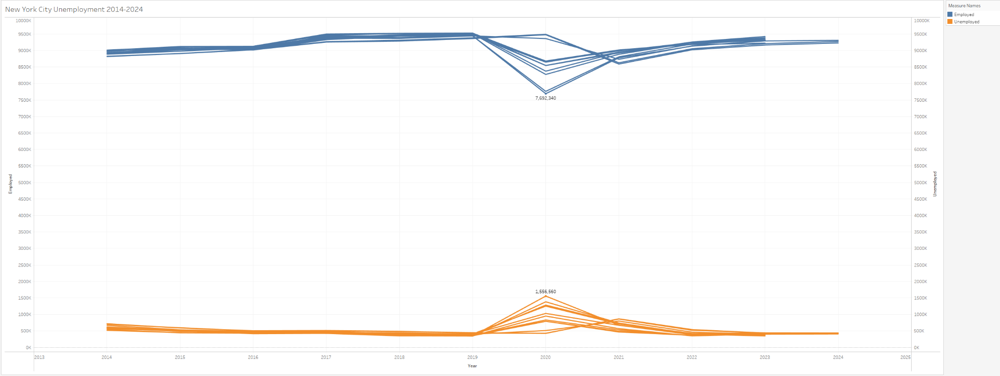

COVID-19’s Effect on Employment Rates
By David, Leo, Danny
Introduction
In early 2020, as COVID-19 escalated into a global pandemic, the U.S. economy entered uncharted waters, marked by soaring unemployment rates and unprecedented economic disruption. This period of turmoil tested the resilience and adaptability of the American workforce and reshaped the economic landscape, leading to a recovery phase between 2023 and 2024. This article delves into the transformative impact of the pandemic on U.S. unemployment, highlighting the human experiences behind the statistics and the pivotal lessons learned.
    Pre-Pandemic Employment Landscape (2019-2020)
Before the pandemic, the U.S. enjoyed one of the lowest unemployment rates in decades, hovering around 3.5% by the end of 2019. However, the early months of 2020 saw this number spike dramatically as COVID-19 forced nationwide lockdowns, causing businesses to shutter and industries such as hospitality and retail to lay off millions of workers. This abrupt shift left many grappling with job loss and uncertainty, setting the stage for a significant economic test.

Immediate Impact and Response
As the pandemic took hold, the unemployment rate surged to nearly 15% in April 2020, reflecting the severe impact on sectors reliant on physical presence. Career consultant Deborah Frangquist recalls the sudden transition, "Just on March 16th, 2020, I had my last working day in my office... That was easy to move home." Her experience mirrors that of millions who adapted to remote working, highlighting a significant pivot in the traditional work environment.
Government policies, including enhanced unemployment benefits, payroll protection programs, and economic stimulus packages, played crucial roles in mitigating the effects of the pandemic. These measures provided a lifeline to both businesses and workers, helping stabilize the economy and pave the way for the recovery phase.
  As of March 2024, US workers are currently enjoying very low levels of unemployment. During the height of the pandemic, the overall unemployment rate spiked to 14.8%, before dropping quickly to just 6.8% by September of 2020. Despite this, the following months saw a slower progression in employment rates, as unemployment only fell 1% lower over the following 8 months. By the end of 2021, the economy was back on track, with the rate of unemployment dropping quickly to just 4% by winter of 2021, where it has remained for 26 straight months. The unemployment rate is currently sitting at around 3.6%, slightly lower than pre-pandemic levels, and has been the longest continuous stretch of 4% or below unemployment rates since the beginning of the Vietnam War.
Sector-Specific Impacts and Demographic Disparities
The pandemic's impact was not uniform, with some sectors experiencing more severe effects than others. Hospitality and retail faced devastating job losses due to their dependence on customer presence. In contrast, technology and healthcare sectors saw growth, driven by the need for digital solutions and health services.
Demographic analyses reveal that young workers, women, and minority groups faced disproportionately higher unemployment rates. These groups were often employed in the hardest-hit sectors and had less access to remote working opportunities, exacerbating existing inequalities. Frangquist reflects on the broader implications, noting, "None of us knew that much, and my experience was as useful as anybody's could be... I certainly knew a lot about navigating change and managing relationships in the workplace."
The Path to Recovery (2023-2024)
By 2023, the U.S. had entered a recovery phase, with unemployment rates gradually returning to pre-pandemic levels. This recovery, however, was not just a return to normal but a transformation into a new normal characterized by increased remote work, digitalization, and changing labor market demands.
Deborah Frangquist reflects on the ongoing changes: "I think we're in the end stage of jobs as they existed in the 20th century... People are pretending when they think we will go back to something they call normal." Her insights underscore the lasting changes in the workplace, including the shift towards more flexible, hybrid models of work that have become the standard in many industries.
On the federal level, the US government and policymakers enacted measures for relief and recovery following the pandemic in 2020 and 2021. These policies (made to combat the worst recession in US economic history since World War II), helped to revitalize the economy faster and stronger than initial projections had thought. By the end of 2023, job creation and retention, along with economic activity, was well above projections made prior to the COVID-19 pandemic.
Lessons Learned and Future Preparedness
The pandemic has underscored the importance of adaptability and resilience within the workforce and the economy. It has also highlighted the need for comprehensive safety nets and responsive government policies to support workers during crises.
Frangquist adds, "The whole process of job hunting has continued to change during this same period... Most applications were already automated at least for medium and larger companies... It makes them less eager to try again to be employed by some of the large tech companies unless that's their very narrow field." This evolution in job hunting and employment practices calls for reevaluating how we prepare job seekers for the market.
Looking ahead, the lessons learned from the COVID-19 pandemic can inform future strategies to better prepare for economic disruptions. This includes strengthening infrastructure for remote work, improving access to technology and training for all demographic groups, and ensuring that economic recovery strategies are inclusive and equitable.
As previously mentioned, one of the signature changes post pandemic is the increase of workers who either work fully or partially remotely. The percentage of workers who work exclusively remotely is estimated to be at around 13% according to the federal government. On the contrary, private surveys find this rate to be a bit too low, estimating that the figure is closer to a third of the working force. These figures also suggest that hybrid work schedules are around 50%, a sharp increase from the measly 17% before COVID.
These figures suggest that remote work is here to stay, despite some companies issuing return to work policies. The overwhelming majority of workers surveyed say they still want an option to work from home, even if that means adapting a hybrid work schedule. Despite these companies' efforts to bring their workers back into the physical office space, human resource firms and other surveys suggest that around 20% or more of workers will be fully remote in the coming years. Some of the jobs most dominant in the hybrid or remote work space are technology workers, sales, marketing and finance jobs. These jobs typically offer very little face-to-face interaction, making them perfect for a hybrid work schedule.
Conclusion
The story of U.S. unemployment during the COVID-19 pandemic is not just a tale of numbers but a narrative of human resilience and adaptability. By examining how employment rates fluctuate, the sectors most affected, and the demographics hardest hit, we gain insights into the strengths and vulnerabilities of our economic system. As we move forward, these lessons will be crucial in preparing for future crises, ensuring a robust and resilient workforce ready to face the challenges of tomorrow.
Frangquist concludes with a hopeful outlook: "We're in this very strange stage, which could be exciting but is also very scary. And I see that from clients talking about how to manage this, and I see through their eyes, I know how supervisors in management are sometimes trying hard to adapt and sometimes not trying at all to adapt." This reflection encapsulates the ongoing journey toward an adaptable and robust economic future.